Displaying Satellite Imagery
This section describes how to make displays using geostationary and polar orbiting satellite imagery.
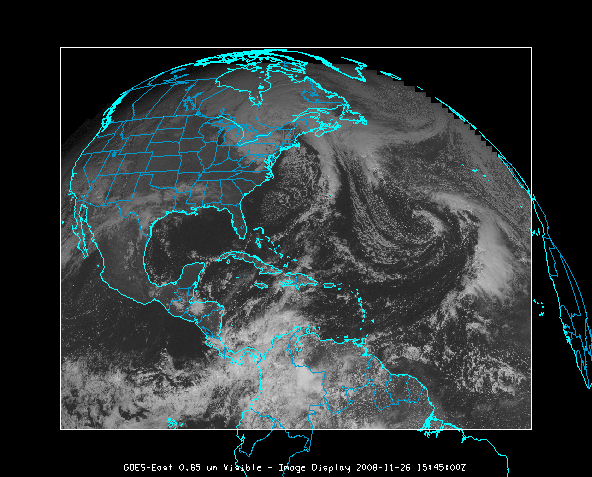
Image 1: Satellite Image in the Main Display Window
The steps include:
Choosing Geostationary Satellite Imagery from a Remote Server
In the Data Explorer window, select the Data
Sources tab. On the left side of this tab, select Satellite->Imagery from
the list of available choosers. For more information about the imagery chooser,
see Choosing Satellite Imagery.
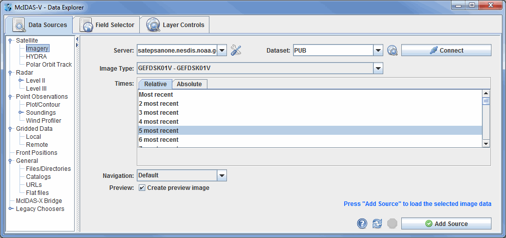
Image 2: Data Sources Tab of the Data Explorer
- Choose the ADDE Server: adde.ssec.wisc.edu and
the Dataset: RTIMAGES.
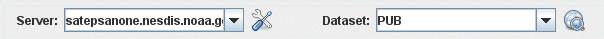
McIDAS-V comes pre-configured with a list of ADDE servers and datasets,
or you can enter your own. See Available
data for a description of these pre-defined data sets.
- Press Connect to query the server for available
image types.
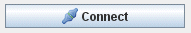
- Select the Image Type to use (in the example
below, GE-IR for GOES-East 10.7um IR
images).
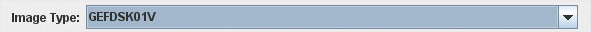
- Choose the image time(s) you want. Either choose a set of relative times
as shown in the example below (5 most recent), or a set of absolute times
as shown in step 5.
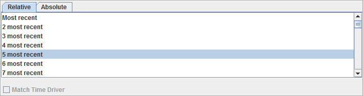
- A set of absolute times (e.g., 17:15:00 UTC, 19:15:00 UTC).
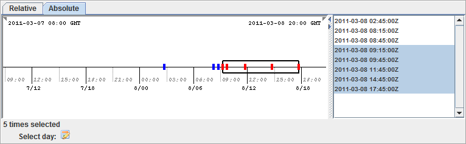
When choosing absolute times for the first time McIDAS-V needs
to query the ADDE server for the times. This may take some time.
To select more than one time use Ctrl+click or Shift+click.
- Select the Navigation type (either Default or Lat/Lon). Choose Lat/Lon
if you are using Level 1B or POES ADDE servers.
- If you do not want to create a preview image in the Field Selector tab of the Data Explorer, uncheck
'Create preview image' box.
- When done, load the selected image data with the Add
Source button.
The image data source that you selected will be shown in the Field
Selector tab. The available display types are listed in the Displays panel,
the times are listed in the Times tab, the preview image or map is displayed
in the Region tab, and the geographical selection parameters are listed in the
Advanced tab.
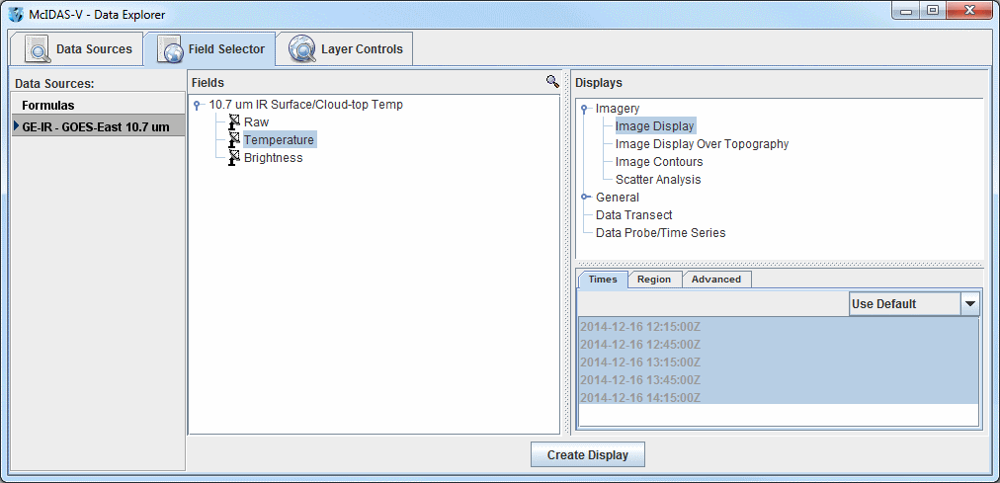
Image 3: Field Selector Tab of the Data Explorer
- Select the calibration that you wish to display in the Fields panel.
In this example, Temperature is selected.
- "Image Display" should be selected for you in the Displays panel.
"Image Display" displays your data as an image and is the display type used
for satellite and Level III radar images in almost all cases.
- Click the Region tab to view the Preview Image. Use the mouse to Shift+left
click and drag to select the geographical boundaries of your image.
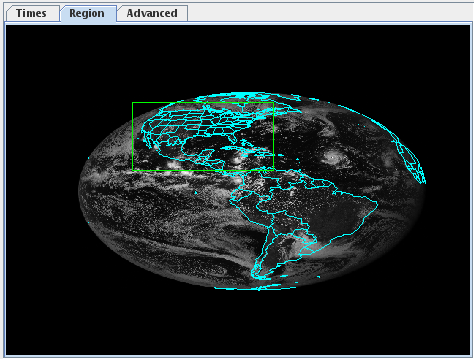
- Click
 to display the image(s) in the Main Display window. To control
time animation use the Time Animation
Widget.
to display the image(s) in the Main Display window. To control
time animation use the Time Animation
Widget.
If you want to create another type of satellite display over your current
display, click "Image Contours" in the Displays panel
to contour your data. To change your contour colors, right click on the color
bar in the Legend, and choose one of the color tables shown in the list.
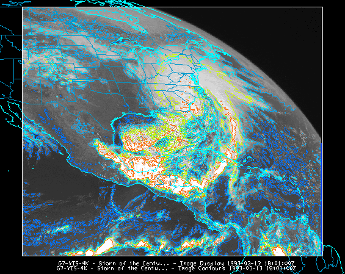
Image 4: Satellite Image with Contours in the Main Display Window
Due to the variability in brightness values in satellite images, some changes may need to be made to the contours to produce a quality image. To reduce the number of contours in the image, the contour interval can be increased by clicking the button next to Contour in the Layer Controls tab of the Data Explorer, and entering a higher value for the Contour Interval. To decrease the rigidness of the contours, select a new Smoothing method in the Layer Controls tab and enter a higher smoothing factor.
Displaying a Single Polar Orbiting Satellite Image
from a Remote Server
Return to the Satellite Imagery chooser in the Data Sources tab of the Data Explorer.
Selecting polar orbiting satellite data is similar to the method to select geostationary
data.
- Choose the ADDE Server: stratus.al.noaa.gov and the
Dataset: RTIMAGES and press Connect to query
the server for available image types.
- Select the Image Type to use (in the example below, ANTARCTIC - Antarctic Thermal IR Composite).
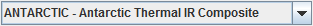
- Choose to display the most recent image, and click
 .
.
- In the Fields panel, select the calibration that you wish to view.
- When done, load
the selected image data with the button.
- The polar orbiting satellite image will be displayed on top of the existing
geostationary satellite image.
Creating a Loop of Polar Orbiting Satellite Images
from a Remote Server
When creating loops of polar orbiting satellite images, it is recommended
that the Auto-set Projection option be turned off, and a global
projection be used in the map display to ensure all images can be viewed. For
this example, turn the Auto-set Projection option off by going
to the Main Display window and selecting Projections->Auto-set Projection.
Under the same menu, change your projection to Projections->Predefined->World.
These options can also be used for displaying single images of polar orbiting
satellite data. If you have access to an ADDE server with Aqua or Terra granules, you can use the following steps to display the data:
- Return to the Data Sources tab of the Data Explorer.
- Select a different Image Type to use (in the example below,
Aqua 500 meter resolution Calibrated Radiances).
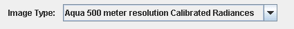
- Choose a set of either the 10 most recent relative times, or a set of 10 absolute
times.
- When done, load the selected images into the Field
Selector with the button.
- In the Fields panel, select the calibration that you wish to view.
- In the Advanced tab, change the Coordinate Type to Image Coordinates.
There is currently no method of determining the latitude and longitude boundaries
of multiple polar orbiting images. Using the Image
Coordinates option ensures
the images will be displayed.
- When done, load the selected images with the button.
Accessing Additional Tutorials